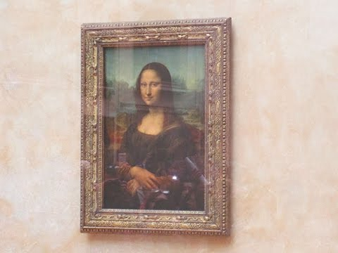
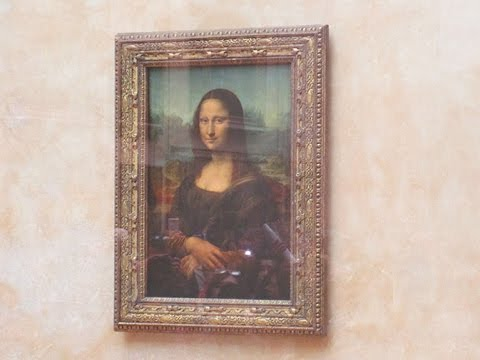
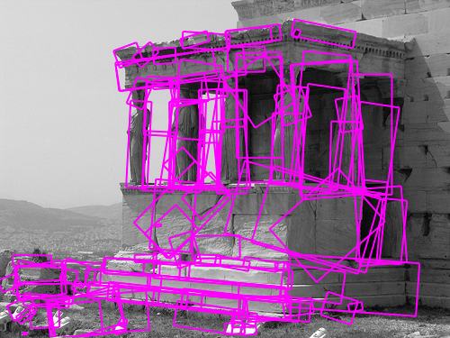

Painting Detector - Project Update 1
Akhila Ballari, Hemanth Bellala, Raghav Bhat, Carl Mubarak, Vivekanand Rajasekaraballari6, hbellala3, rbhat35, cmubarak3, vrajasekar6
Fall 2018 CS 4476 Computer Vision: Painting Detector
Georgia Tech
 or

==>
or

==>
 Mona Lisa by Leonardo da Vinci (1503)
Mona Lisa by Leonardo da Vinci (1503)
Introduction
This project will demonstrate a system that uses computer vision techniques in order to help museum goers learn about the paintings they see. The system will work by having users take photos of—or with—the paintings they like or want to learn more about. Our system will then take as input these images and, using a variety of known-techniques, find the painting’s match if it exists in the database. The output of the system will be the original painting, as well as information detailing the painting—it’s creator and a description of painting. The authors of this paper believe that this will be a valuable and important tool, allowing museum visitors to focus on seeing art while they’re at the museum and learning more about their favorite pieces at home. In order to label these paintings well, we will analyze several different computer vision approaches, focusing on efficiency and accuracy.Approach
We have identified several approaches we will use to detect paintings—texture analysis, edge detection, color analysis, and feature detection. We shall first tune each of these different approaches to the images. Then, we shall use a combination of these approaches to find an efficient algorithm that labels as many paintings correctly as possible.Method 1 - Texture
Texture analysis will improve the overall result of our system since different paintings may have similar colors and features, but may be of two different mediums. For example, oils paints are thicker than watercolor paints. Even though an oil painting of a city landscape contains the same features and colors as a watercolor painting of the same city landscape, the texture of the oil painting may be more rugged than the watercolor paintings.
We plan on running a set of diverse filters on every pixel of each image in our database, then concatenating the filtered values together to form an M x N x k matrix, where k is the number of filters and M, N are the dimensions of the image. We will have one M x N x k matrix for every image in our dataset. When an image is inputted into our system, we will apply each filter in our filter bank to produce an M x N x k matrix for the input. We will then compute the sum of the squared distances to find the painting in our dataset with the smallest euclidean distance to our input, which will be the most similar-painting. Rather than implementing this process ourselves, we plan to use OpenCV and OpenGL.
The authors believe that this approach individually may not give us the result we desire due to the difficulty in capturing the texture of a painting through a picture of it: several factors, such as lighting, may obscure the textures. However, it could be used in narrowing down on possible matches.

Method 2 - Edges
Edge detection will aid in narrowing down on the painting style or time period that the painting originated from. Paintings from different time periods vary in edge style. While modernist paintings incorporate more structured and prominent edges, paintings from eras such as Impressionism use softer and less prominent edges. We will utilize Canny Edge Detection to analyze these paintings as it aids in detecting a wide range of edges. The dataset we are using is categorized by time period, so we plan to preprocess a sample of paintings from each time period to determine the period’s edge characteristics. Then for each input image, we can use Canny Edge Detection to find the closest match. We will have to be careful with the threshold used in Canny Edge Detection, as we do not want to completely loose any soft edge information. The threshold will have to be low enough to be able to detect soft edges, so the intensity of each detected edge can help accurately identify edge characteristics and ultimately the time period that the painting could have originated from. We will utilize OpenCV for the Canny Edge Detection. While this approach will not guarantee an exact match for a given input image, it will aid in narrowing down on specific time period that the painting could have belonged to.

Method 3 - Color
Another approach that we will be looking at is analyzing the colors in the image to classify the paintings. A basic approach might entail simply summing up the pixel values for each of the R, G, and B channels and looking for images that have similar intensity values. A slightly more robust solution might entail a histogram of pixel color combinations and matching the input image with other pictures that have similar histograms of the pixel colors. However, a much more robust classification based on the colors of the images could be achieved using neural networks. If we train our classifier to remember the color values of the pixels given a set of images, then, based on an input image’s color values, we can predict which of the image this is coming from. We can use methods in scikit to implement the neural network, and certain methods in OpenCV to derive the color values of an image. View Source

Method 4 - Features
We plan to use feature detection as another part of our approach for scoring paintings to see which one is our target painting. Using this, we can easily track specific patterns and features between our sample photos and the target paintings. Features will be areas with the maximum variation when moved in all the regions around it. Feature detection can be done using either the Harris corner detection or blob detection. Harris corner detection is a very simple yet efficient algorithm which finds the corners, which are the parts of an image least affected by translation, rotation, and illumination, of the images to effectively find matches between images. Blob detection follows the same concept of Harris corner detection, but instead of looking for corner it looks for a regions in a image that differ in properties relative to the regions’ surroundings, “blobs”. Blob detection is useful because the “blobs” that are found are fairly consistent across images. When looking to find matches between images, these “blobs” are very similar to corners in that they are not as affected by translation, rotation, and illumination. We will make use of available methods contained in the OpenCV library for this portion of our project.

Image Credits
Experiments and results
Experimental SetupWe will pre-analyze the images in the WikiArt dataset using the approaches described above to get a set of characteristics for each picture. Then for each input image, we will analyze the image using various approaches to find the best match.
Data Sets
- WikiArt - https://www.wikiart.org/
- Paintings are categorized with the following labels:
- Styles
- Genres
- Media
- Some of the approaches will be used to narrow down on one or more of these categories, while others will be used to specifically find a match in the specific category
- Each painting has an author and a brief description
- Paintings are categorized with the following labels:
Our objective is to find the best approach for classifying paintings, and thus, we will utilize OpenCV, OpenGL, and Scikit for implementing most of the approaches mentioned. However, since some of the approaches require a more specific analysis technique, such as creating a neural network to analyze color, we will also have to do some implementation.
Definition of Success
Success is defined by finding an input’s match using one or more of the approaches mentioned above. In doing so, we hope to find the approach or combination of approaches that correctly finds the corresponding picture for the highest percentage of input images.
Data Collection Protocol
As of now, we plan to use the WikiArt database containing famous paintings to check our sample images against. Each painting will be accompanied by the artist’s name and a brief description of the painting. When a match is found, those pieces of information along with a photo of the painting will be returned to the user. This is because our intended purpose for this project is that if someone is at a museum but not close enough to a picture to read about it, they would be able to take a photo of it, specify the corners, and read about it from where they are.
List of Experiments
- The goal of the first experiment would be to figure out a way to combine these various methods (color, texture, edge, features) such that we get a system with the highest accuracy. Our system will be composed of the results of the 4 methods each of which will be weighted a certain amount. To find these weights, the first experiment will execute a gradient descent algorithm with random restarts over a random subset of the dataset. We will repeat this 100 times and average those weights.
- Another experiment would reveal to us the individual methods that are most successful (in case a combination is not required and is overfitting to the data; Occam and his razor have suggested this). This could be done simply by running each of the methods individually (a 100 times) on a random subset (of size 200) of the images. The best performing algorithm can then be chosen.
- For the color method, we shall try each of the three techniques described to determine which is the optimal performer.
- For the texture method, we shall try 50 different filters on random subsets of the images to determine which ones produce the best results.
- For the edges method, we shall vary the gaussian sigma and the gaussian box to determine the optimal parameters for our purposes and given our dataset.
- Once the best combination of approaches is determined, we will test the accuracy of our painting detector by testing the algorithm on 200 randomly picked paintings and getting a percentage for the accuracy in finding a match. The detector will get a point for every painting that was matched correctly to the painting in the database.
We expect that weighing the texture the highest will yield us with the best results. This is because the texture of an image, from our knowledge of paintings, tells the most about the unique painting’s content. After that, the second-highest weights would belong to using edges. This is because the edges are a unique identifier to any image and will uniquely identify each painting. We are confident that no two paintings have identical sets of edges. After that, we expect the features to be weighted since features would also uniquely identify each of the paintings. Most paintings should be identifiable by unique features which the blob detection should be able to identify. Lastly, color detection will be used to measure the varying presence of different colors. We predict this will have the least weight since many paintings from similar eras have the same colors. This would throw off our color detector and leave us with results that might not be completely accurate. However, it would still be useful in order to break ties when maybe the edges are matching, but simply the colors are different.
To quantify the results of the experiments, we will simply see which combination of the different features provides the best classifier. In other words, accuracy in classification will be our primary metric for determining the result of our experiments. In addition to that, we also plan to use run-time as another metric: if a set of approaches has high accuracy but takes significantly longer to run than other approaches with slightly lower accuracies, time will be taken into consideration.